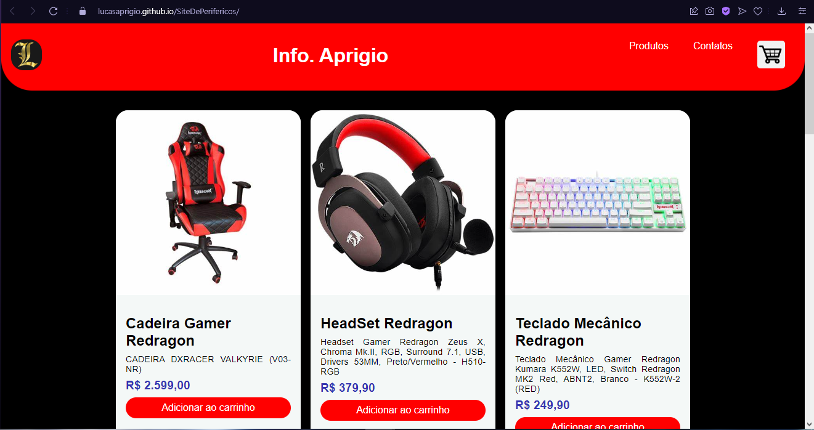
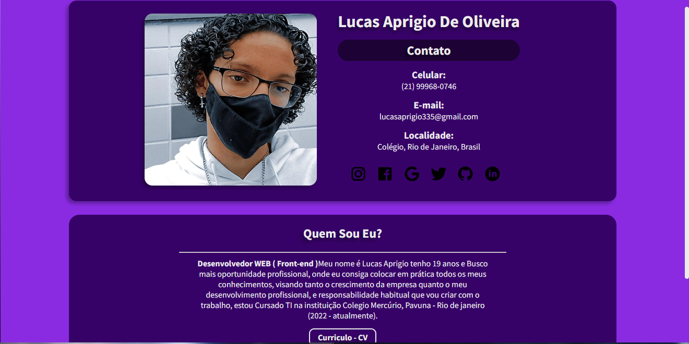
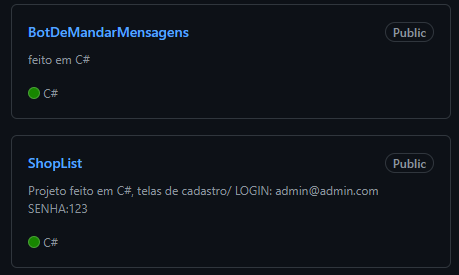

<div class="conteiner">
  <div class="tudo">
    <div class="info">

      <div class="titulo"><h1>Projetos</h1></div>

        <div class="conteudo">

            <h3>Site de Periféricos Gamer</h3>
              <p> Esse foi um projeto que eu fiz no meu curso técnico com apenas <strong>HMTL e CSS</strong>, onde eu construi um site do tipo loja virtual, onde vendia des de Pc's até mouse, teclado etc.</p>
                 <a href="https://lucasaprigio.github.io/SiteDePerifericos/"></a>

            <h3>Site Curriculo</h3>
              <p>Com a ideia de deixar meu curriculo um pouco mais dinâmico, criei um site apenas com <strong>HTML e CSS</strong> com minhas informações e links para as minhas redes socias, caso queira entrar em Contato.</p>
                <a href="https://lucasaprigio.github.io/LucasAprigioCurriculo/"></a>

            <h3>Programas Desktop</h3>
              <p>Esses dois arquivos foram projetos feito completamento em <strong>C#</strong>, na qual o primeiro é um Bot onde você delimita quantas mensagens você quer que ele envie atras do prompt de Comando (CMD), O outro é um programa de cadastro de lista de compra, de usuarios e funcionarios.</p>
                

                <div>
                  <a class="principal"href="">Pagina principal</a>
                </div>
        </div>
    </div>
  </div>
</div>
